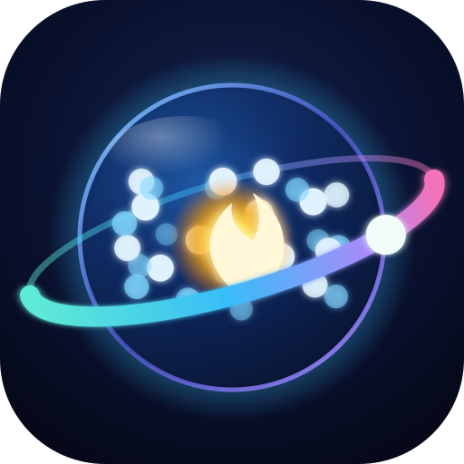

Vai al contenuto
☰
←

Consulente Digitale
il cervello che sceglie, aggiorna e ottimizza
--:--:--
·
ora del PC
● rete
● IA
🔎
Cerca
🖨️
Stampa
⏹
Stop
🔊
🌐
IT
🧹
🌓
A+
🚑
Neura Soccorso
🏠
Inizio
🧠
Parla con Neura
📰
Notizie
🛒
Cosa comprare
🔬
Analisi del PC
🧬
Hardware e sensori
🛠️
Diagnosi e interventi
⬇️
Aggiornamenti e driver
🚀
Ottimizza
🩺
Salute e riparazioni
🛟
Salvadati (recupero dati)
🛡️
Antivirus
🚑
Kit di emergenza
📦
Programmi consigliati
♻️
Economia circolare
💡
Cose da sapere
📜
Storia dei computer
🔄
Scarica gli aggiornamenti
⚙️
Impostazioni
❤️
Sostieni il progetto
📜
Licenza e autore
📘
Vademecum (PDF)
Ideato e sviluppato da
Danilo D'Auria
Codice MIT · Contenuti CC BY-NC-SA 4.0
v
🧠 Neura
pronta
✕
🎤
➤
Il Consulente Digitale ha bisogno di JavaScript attivo nel browser.